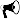

On someones desk
- S. Sugiyama, M. Minowa, Y. Fukamachi., S. Hata, Y. Yamamoto, T. Sauter, C. Schneider, M. Schaefer, Subglacial discharge controls seasonal variations in the thermal structure of a glacial lake in Patagonia, submitted
Peer-reviewed
- N. Nagatsuka, K. Goto-Azuma, A. Tsushima, K. Fujita, S. Matoba, Y. Onuma, R. Dallmayr, M. Kadota, M. Hirabayashi, J. Ogata, Y. Ogawa-Tsukagawa, K. Kitamura, M. Minowa,Y. Komuro, H. Motoyama, and T. Aoki (2021), Variations in mineralogy of dust in an ice core obtained from northwestern Greenland over the past 100 years, Climate of the Past, 17, 1341–1362, doi:10.5194/cp-17-1341-2021
- M. Minowa
, S. Sugiyama, I. Masato, S. Yamane and S. Aoki (2021), Thermohaline structure and circulation beneath the Langhovde Glacier ice shelf in East Antarctica, Nature Communications, 12, 4209, doi:10.1038/s41467-021-23534-w
- Data repository [ADS]

- M. Minowa, M. Shcaefer, S. Sugiyama, D. Sakakibara and P. Skvarca (2021), Frontal ablation and mass loss of the Patagonian icefields, Earth and Planetary Science Letters, 516, 116811, doi:10.1016/j.epsl.2021.116811
- Data repository [zenode]
- S. Sugiyama, N. Kanna, D. Sakakibara, T Ando, I. Asaji, K. Kondo, Y. Wang, Y. Fujishi, S. Fukumoto, E. Podolskiy, Y. Fukamachi, M. Takahashi, S. Matoba, Y. Iizuka, R. Greve, M. Furuya, K. Tateyama, T. Watanabe, S. Yamasaki, A. Yamaguchi, B. Nishizawa, K. Matsuno, D. Nomura, Y. Sakuragi, Y. Matsumura, Y. Ohashi, T. Aoki, M. Niwano, N. Hayashi, M. Minowa, G. Jouvet, E. van Dongen, A. Bauder, M. Funk, A. A. Bjørk and T. Oshima, (2021), Rapidly changing glaciers, ocean and coastal environments, and their impact on human society in the Qaanaaq region, northwestern Greenland, Polar Science, 27, 100632, doi:10.1016/j.polar.2020.100632
- M. Minowa, M. Schaefer, P. Skvarca, S. Matoba and G. Gacitua (2019), Glaciological traverse across the Southern Patagonian Icefield, Bulletin of Glaciological Research, 37, 47–56, doi:10.5331/bgr.19R03
- S. Sugiyama, F. J. Navarro, T. Sawagaki, M.Minowa, T. Segawa, Y. Onuma, J. Otero and E. V. Vasilenko (2019), Subglacial water pressure and ice speed variations at Johnsons Glacier, Livingstone Island, Antarctic Peninsula, Journal of Glaciology, 65(252), 689–699, doi: 10.1017/jog.2019.45
- M. Minowa, E. A. Podolskiy, S. Sugiyama (2019), Tide-modulated ice motion and seismicity of an ice shelf in East Antarctica, Annals of Glaciology, 60(79), 57–67, doi: 10.1017/aog.2019.25
- M. Minowa, E. A. Podolskiy, G. Jouvet, Y. Weidmann, D. Sakakibara, S. Tsutaki, R. Genco, S. Sugiyama (2019), Calving flux estimation from tsunami waves, Earth and Planetary Science Letters, 515, 283–290, doi:10.1016/j.epsl.2019.03.023 
- Data repository [zenode]
- S. Sugiyama, M. Minowa and M. Schaefer (2019), Underwater ice terrace observed at the front of Glaciar Grey, a freshwater calving glacier in Patagonia, Geophysical Research Letters, 46, 2602–2609, doi: 10.1029/2018GL081441
- H. Seddik, R. Greve, D. Sakakibara, S. Tsutaki, M. Minowa and S. Sugiyama (2018), Response of the flow dynamics of Bowdoin Glacier, northwestern Greenland, to basal lubrication and tidal forcing, Journal of Glaciology, 65(250), 225–238, doi:10.1017/jog.2018.106
- M. Minowa, E. A. Podolskiy, S. Sugiyama, D. Sakakibara and P. Skvarca (2018), Glacier calving observed with time-lapse imagery and tsunami waves at Glaciar Perito Moreno, Patagonia, Journal of Glaciology, 64(245), 362–376, doi:10.1017/jog.2018.28
- Highlighted in GlacierHub, 2018
- M. Minowa, S. Sugiyama, D. Sakakibara and P. Skvarca (2017), Seasonal variations in the ice–front position controlled by frontal ablation at Glaciar Perito Moreno, Southern Patagonia Icefield. Frontiers in Earth Science – Cryosphere Sciences, 5:1, doi:10.3389/feart.2017.00001
- S. Sugiyama, M. Minowa, D. Sakakibara, P. Skvarca, T. Sawagaki, Y. Ohashi, N. Naito and K. Chikita (2016), Thermal structure of proglacial lakes in Patagonia. Journal of Geophysical Research-Earth Surface, 121, 2270–2286, doi:10.1002/2016JF004084
- Highlighted in EOS (AGU), 2017
- E. A. Podolskiy, S. Sugiyama, M. Funk, F. Walter, R. Genco, S. Tsutaki, M. Minowa and M. Ripepe (2016), Tide–modulated ice flow variations drive seismicity near the calving front of Bowdoin Glacier, Greenland. Geophysical Research Letters, 43, 2036–2044, doi:10.1002/2016GL067743
- S. Matoba, H. Motoyama, K. Fujita, T. Yamasaki, M. Minowa, Y, Onuma, Y. Komuro, T. Aoki, S. Yamaguchi, S. Sugiyama and H. Enomoto (2015), Glaciological and Meteorological observations at SIGMA–D site, northwestern Greenland Ice Sheet. Bulletin of Glaciological Research, 33, 7–14. doi: 10.5331/bgr.33.7
- M. Minowa, S. Sugiyama, D.Sakakibara and T. Sawagaki (2015), Contrasting Glacier Variations of Glaciar Perito Moreno and Glaciar Ameghino, Southern Patagonia Icefield. Annals of Glaciology, 56(70), 26–32, doi:10.3189/2015AoG70A020